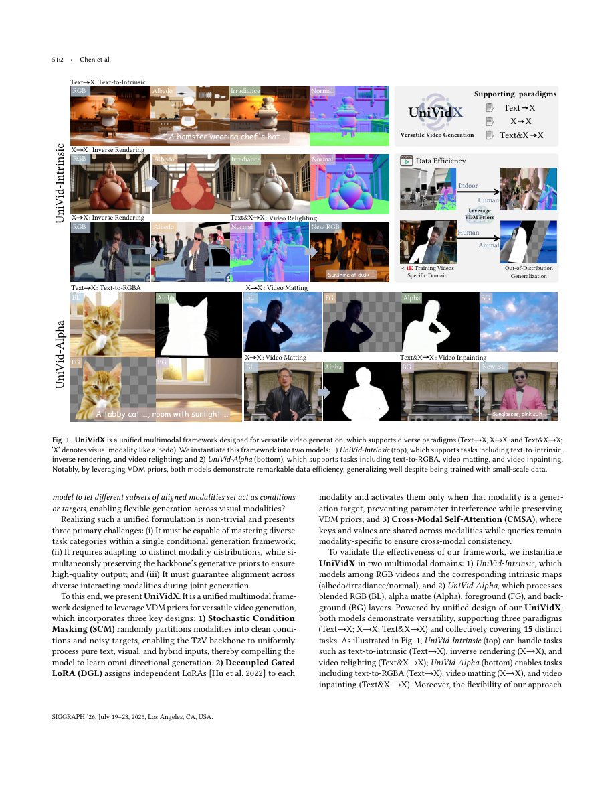

#1
★ 7/10
UniVidX: A Unified Multimodal Framework for Versatile Video Generation via Diffusion Priors
UniVidX：基于扩散先验的多功能视频生成统一多模态框架

图 Figure · Page 2 of paper
🎯 单一扩散模型统一处理多种视频模态生成任务
A unified diffusion framework handles multiple video modalities with one model instead of separate per-task models.
| 维度 | 中文 | English |
|---|---|---|
| ❓ 待解决 的问题 |
现有视频扩散模型通常针对每个任务（如深度估计、法线预测、Alpha抠图）分别训练，导致输入输出映射固定、模型无法学习跨模态关系。这种方式既低效又缺乏灵活性，也错失了利用跨模态信息提升整体质量的机会。 | Existing video diffusion models (VDMs) are typically trained separately for each task (e.g., depth estimation, normal prediction, alpha matting), which fixes the input-output mapping and prevents the model from learning relationships across modalities. This approach is wasteful, inflexible, and misses opportunities for cross-modal information sharing that could improve quality across all tasks. |
| 💡 解决 的亮点 |
• **随机条件遮蔽（SCM）**：训练时随机将模态划分为干净条件或噪声目标，实现任意到任意的条件生成，打破固定映射限制。 • **解耦门控LoRA（DGL）**：仅在某模态作为生成目标时激活对应的LoRA适配器，在适配新模态分布的同时保留VDM主干的原始先验。 • **跨模态自注意力（CMSA）**：跨模态共享键值（K/V），保留各模态独立的查询（Q），高效促进跨模态对齐与信息交互。 | • **Stochastic Condition Masking (SCM)**: randomly assigns modalities as either clean conditions or noisy targets during training, enabling any-to-any conditional generation without fixed mappings. • **Decoupled Gated LoRA (DGL)**: activates per-modality LoRA adapters only when that modality is a generation target, preserving the VDM backbone's original priors while adapting to new modality distributions. • **Cross-Modal Self-Attention (CMSA)**: shares keys and values across modalities while keeping modality-specific queries, efficiently promoting cross-modal alignment and information exchange. |
| 🧪 实验 内容 |
UniVid-Intrinsic在IIW（反照率）、MIT Intrinsics及视频法线估计等内在分解基准上评估，与Intrinsic Image Diffusion、GeoWizard、StableNormal等专用模型对比。UniVid-Alpha在VideoMatte240K和BG-20k等视频抠图基准上评估，与RobustVideoMatting及视频Alpha扩散模型等方法对比。两个模型还在野外场景中进行了泛化性定性评测，值得注意的是训练数据不足1000个视频。 | UniVid-Intrinsic was evaluated on intrinsic decomposition benchmarks including IIW (albedo), MIT Intrinsics, and video normal estimation datasets, compared against state-of-the-art specialized models like Intrinsic Image Diffusion, GeoWizard, and StableNormal. UniVid-Alpha was evaluated on video matting benchmarks such as VideoMatte240K and BG-20k against methods like RobustVideoMatting and video alpha diffusion models. Both models were also tested on in-the-wild generalization with qualitative assessments, notably trained on fewer than 1,000 videos. |
| 📊 实验 结果 |
UniVid-Intrinsic在反照率估计（IIW WHDR指标）、法线估计（平均角误差）和辐照度预测上均达到或超越专用单任务模型水平。UniVid-Alpha在VideoMatte240K上的SAD和MSE指标与RobustVideoMatting等专用抠图模型持平或更优。两个模型在不足1000个训练视频的条件下，均展现出强劲的野外泛化能力，以统一模型在4个以上不同任务上匹配甚至超越各任务专属的最先进方法。 | UniVid-Intrinsic achieves competitive or superior performance on albedo estimation (IIW WHDR reduced vs. baselines), normal estimation (mean angular error improved), and irradiance prediction compared to specialized single-task models. UniVid-Alpha achieves competitive alpha matting quality on VideoMatte240K (SAD and MSE metrics on par with or better than RobustVideoMatting and dedicated matting models). Both models demonstrate strong in-the-wild generalization despite being trained on fewer than 1,000 videos, outperforming or matching task-specific state-of-the-art methods across 4+ distinct tasks within a single unified model. |
| 🏁 结论 | UniVidX证明了基于视频扩散先验构建的单一统一多模态框架，即便在极少训练数据下，也能在多种像素对齐视频生成任务上匹配甚至超越各任务专属模型。其三大核心设计——SCM、DGL和CMSA——共同实现了灵活的全向生成、模态专属适配与跨模态一致性，同时保留了主干模型的原始生成能力。 | UniVidX proves that a single unified multimodal framework built on video diffusion priors can match or exceed specialized per-task models across diverse pixel-aligned video generation tasks, even with very limited training data. Its three core designs—SCM, DGL, and CMSA—together enable flexible omni-directional generation, modality-specific adaptation, and cross-modal consistency without sacrificing the backbone's original generative strength. |
| 🔗 论文 链接 |
arXiv: 2605.00658v1 · 📥 PDF | |
⚙️ Method · 方法详解
UniVidX将所有像素对齐的多模态视频任务统一表述为共享多模态空间中的条件生成问题，构建于预训练视频扩散主干之上。训练时，SCM随机将模态分配为条件（干净）或目标（加噪），使模型同时学习所有方向的生成路径。DGL引入轻量级的每模态LoRA适配器，仅在该模态被生成时激活，保证模态专属适配的同时不破坏主干先验。CMSA在每个注意力层跨模态共享K/V张量，使任意模态都能关注到其他模态的信息，而查询向量保持模态专属。文章实例化了两个系统：UniVid-Intrinsic（RGB+反照率+辐照度+法线）和UniVid-Alpha（混合RGB+RGBA图层）。
UniVidX formulates all pixel-aligned multimodal video tasks as conditional generation within a shared multimodal space built on top of a pretrained video diffusion backbone. During training, SCM randomly partitions modalities into conditions (clean) and targets (noisy), so the model learns all directional generation paths simultaneously. DGL introduces lightweight per-modality LoRA adapters gated by whether that modality is being generated, ensuring modality-specific adaptation without corrupting the backbone's strong priors. CMSA injects cross-modal attention by sharing K/V tensors across modalities at each attention layer, letting any modality attend to information from all others while queries remain modality-specific. Two instantiations are demonstrated: UniVid-Intrinsic (RGB + albedo + irradiance + normal) and UniVid-Alpha (blended RGB + RGBA layers).
📐 Key Formulas · 关键公式
\[\mathcal{L} = \mathbb{E}_{t, \epsilon}\left[\left\| \epsilon - \epsilon_\theta\left(z_t^{\text{tgt}}, t, z_0^{\text{cond}}\right) \right\|^2\right]\]
💡 统一扩散训练目标：模型学习从加噪目标模态 z_t^{tgt} 和干净条件模态 z_0^{cond} 中预测噪声，SCM随机决定哪些模态作为目标、哪些作为条件。
Unified diffusion training objective: the model learns to predict noise from a noisy target modality z_t^{tgt} given a clean condition modality z_0^{cond}; SCM randomly determines which modalities are targets vs. conditions each step.
\[\text{Attn}(Q_i, K, V) = \text{softmax}\left(\frac{Q_i K^\top}{\sqrt{d}}\right)V, \quad K = V = \text{concat}(K_1, \ldots, K_M)\]
💡 跨模态自注意力（CMSA）：每个模态 i 使用自身的查询 Q_i，但键 K 和值 V 由所有模态拼接而成，使模态间可相互参考信息。
Cross-Modal Self-Attention (CMSA): each modality i uses its own query Q_i but attends to keys and values concatenated from all M modalities, enabling cross-modal information sharing within a single attention operation.
🌟 Why It Matters · 为什么重要
本文挑战了多模态视频理解与生成领域"一任务一模型"的主流范式，证明统一方法既更高效又更强大。对更广泛的机器学习社区而言，SCM+DGL+CMSA的设计组合提供了一套可复用的方法论，可应用于任意预训练视频扩散模型，以极少数据解锁多任务生成能力。
This work challenges the prevailing paradigm of training one model per task in multimodal video understanding and generation, showing that a unified approach is both more efficient and more capable. For the broader ML community, it offers a principled recipe—SCM + DGL + CMSA—that can be applied to any pretrained VDM to unlock versatile multi-task generation with minimal data.